OneTrans-GSR：用单个自回归策略统一重排与混排
OneTrans-GSR 研究工业电商推荐最后一段列表生成：从上游提供的异质候选中，直接生成有顺序的曝光列表。论文首页署名为字节跳动 Global E-Commerce Recommendation Foundation Team；arXiv 元数据列出 Feng Cheng 等作者。首次提交为 2026 年 11 月 3 日 UTC，PDF 页内日期是 11 月 4 日，本笔记核验日期为 11 月 5 日。论文入口：arXiv:2611.04720。本轮未核验到独立公开代码仓库，不将生产部署声明等同于可复现工件已开放。
工业推荐已经把大量计算投入逐点候选打分，但最终重排和混排仍常由手工规则与小容量专用模型拼装列表。这既限制可探索的列表组合，也使不同目标之间的取舍依赖人工调参；论文希望将这些决策统一成能够利用更多数据与计算改善的学习问题。
1. 背景和问题
推荐流水线中的“分数更准”与“列表更好”不是同一件事。精排通常估计每个候选的点击、转化或价值，再由后续模块决定曝光顺序。然而用户实际看到的是一组有位置关系的内容：两张很像的商品卡片可能互相挤占注意力，连续多个相同品类可能造成疲劳，直播、短视频与商品卡片之间还涉及内容形态偏好。单个候选的价值无法自动回答这些组合问题，因为它没有显式条件化于已经选出的前缀，也没有直接评估最终列表的整体反馈。
本文使用的混排语境尤其具体。候选池来自不同上游业务渠道，包括商品、短视频、直播和广告；它不是把同质物品重新排序这么简单。后处理需要同时决定选什么、不同类型占多少、放在哪里，并满足去重、间隔和曝光配额。若每个问题交给一个独立小模块，系统会形成一条人工编排链：模块各自局部优化，前一模块改变候选后又影响后一模块的约束空间。增加逐点模型规模，并不保证最后的组装策略也能利用这些计算。
论文把这一现状概括为专家工程系统。专家规则积累了可用的业务知识，例如品类打散、商业加权和疲劳控制，不能把它们简单当作冗余代码。但是，这种系统能够到达的列表空间由规则与小模型共同规定；即使扩大在线搜索，也主要是在已规定的结构内更充分地枚举。作者希望把生成分布本身交给深模型，使参数通过数据学习组合规律，同时把必须执行的业务控制保留在解码过程，而不是先自由生成再由另一条规则链重排。
这一改变要求明确最终优化对象。输入是用户及上下文信息，以及每次请求特有的候选集合；输出是长度固定、无重复的有序子集。本文不从整个商品库生成新物品，也没有替代上游召回和精排。它接收这些阶段已经给出的候选，并把上游精排分数作为特征继续利用。因而“统一”指重排与混排这两个决策阶段，而不是从全库检索到成交的整个推荐系统都变成一个模型。
系统还存在一个重要历史基线：生产环境原本已使用 Generator–Evaluator 结构，从多个生成列表中在线评估选优。因此本文的生产对照并非最弱的纯逐点排序，而是含约束生成、列表评估和业务规则的已部署系统。OneTrans-GSR 将评价模型移到训练阶段，在线只运行生成策略，直接输出列表。判断其收益时，需要同时问策略是否学会了较好的组合，以及去掉在线评估是否减少了服务成本，不能把两种变化只归因于自回归这一术语。
奖励模型承担了从用户反馈到策略梯度的中介角色。点击、下单、成交额和延迟复购是不同的反馈，量纲与稀疏性也不同。作者为列表学习整体奖励，并用额外的逐点与内容类型监督帮助表示学习。奖励模型可以比线上策略更重，因为它不随每次请求部署；但模型更重只意味着训练阶段能利用更多容量，并不保证对新策略生成的列表打分更准确。策略可能寻找奖励模型的误差，因此奖励可靠性本身是方法和实验的中心问题。
长期目标也不能直接照搬短期训练。复购标签需要等待十四天才能完整观测，若与即时反馈共用完全相同的更新节奏，未成熟标签可能污染训练。本文让长期价值模型拥有独立参数和嵌入，只接收观测窗口已完成的标签，再把其预测与短期奖励聚合。这种设计保护了时间口径，却仍然是一个有限期复购代理，不等价于真实终身价值，也没有消除历史策略曝光产生的数据偏差。
本文的方法可以沿三个时间尺度理解：日志阶段学习评价，离线阶段采样完整列表并优化策略，服务阶段在业务约束下快速生成。三者使用相关表示，却不具有完全相同的目标。训练比较一组样本的相对奖励，服务从多个采样列表中按累计序列概率选取一个。平均采样奖励上升不必然使最高概率列表更好；作者在离线评估中沿用服务选择规则，再用随机生产试验检验最终系统，正是为了缩小这两个目标之间的缝隙。
需要保留的另一层区别是“硬约束”与“业务偏好”。禁止已选候选再次出现，可以用可用性掩码直接保证；希望减少某种疲劳或提高新内容曝光，则更多是软目标。有些位置配额虽然可写成局部检查，多条规则相互作用后仍可能没有可行的完整列表。论文并未证明一个通用约束求解器，所实现的是每步掩码与有限分数调整。若忽视这一点，会把非零综合违例率误解为掩码完全无效，或者反过来把掩码存在解释为全部业务规则必定满足。
对研究阅读而言，这篇工作值得看的不是一个孤立的线上增益，而是工业系统如何把模型、奖励、规则和优化实现接起来。它提供了同候选输入下的交互方式对照、奖励模型的读出消融、组合扰动、业务权重扫描、计算扩展和生产随机试验。不同证据回答不同问题：离线预测区分度说明日志内判别能力，扰动响应说明结构敏感性，生产指标说明整体替换在该场景的效果。把这些证据逐层拆开，才能判断哪些机制有条件迁移到自己的业务。
生产应用的输入还包含显式用户统计和内容形态信息，模型并非只从最终曝光标签猜测业务意图。把已选列表作为条件，只能在上游保留的候选空间内寻找组合；若召回已经漏掉用户偏好的内容，后级策略无法恢复它。由此，本文的评价应固定候选可见性和上游分数来源，而不是把候选质量改变后的收益也记作列表学习效果。
2. 方法
2.1 列表奖励模型与离线训练闭环
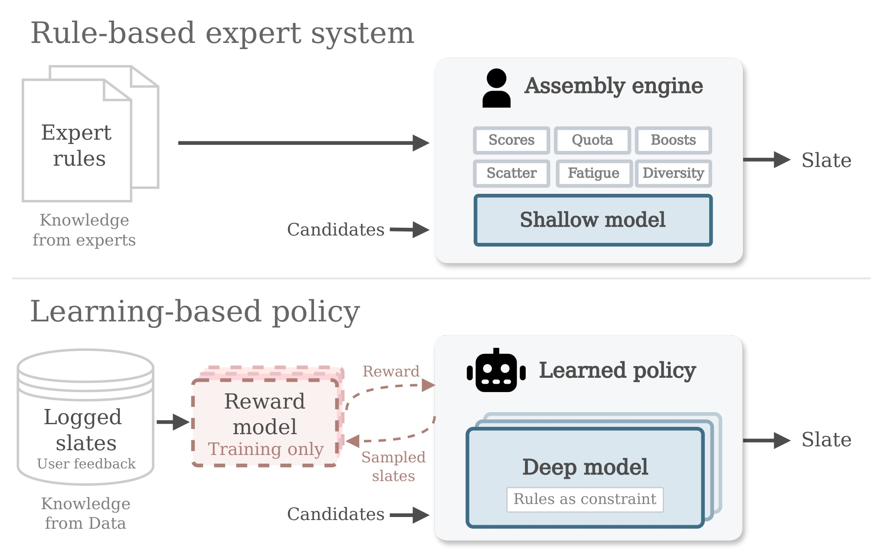
Figure 1 对比两种知识进入系统的方式。上半部分由专家知识形成规则，围绕浅模型执行配额、加权、打散、多样性和疲劳等操作，再把候选组装成曝光列表；下半部分把日志中的曝光和用户反馈用于训练奖励模型，让深策略通过采样列表获得奖励，规则则保留为约束。图中虚线奖励交互发生在训练阶段，不能解释为每次线上请求都调用奖励模型。深模型接收候选后直接给出列表，改变的是组装决策的学习方式，而非凭空取消业务知识。对比图没有给出量化优劣，本身只定义后文实验要检验的系统替换：是否能把专家经验之外的组合规律转化为模型参数，同时维持显式业务控制。它也提示评估边界，若原系统在线还有评价器，新的服务成本下降可能来自评价器离线化，不能将全部加速归为深模型运算本身更快。
离线闭环包括分别预训练 RM 与策略，再用冻结 RM 对策略采样列表打分。奖励模型和策略都采用 OneTrans 主干，但参数独立；共享的是候选 token 表示方式，并非同一组参数在两处反复更新。RM 将用户行为、候选和有序列表编码，列表末尾添加 EOS，用该位置的最终隐藏状态预测整列点击、订单和成交额。因果注意力让 EOS 看到前面所有物品及其位置，避免只能逐项相加而对顺序迟钝。
符号解释：$L$ 为有序列表，$u$ 为用户与上下文，$\phi$ 为 RM 参数，$h_{\rm EOS}$ 是末尾 token 状态；$o_v$ 表示该列表在目标 $v$ 上是否出现正反馈，$\omega_v$ 为加权逻辑回归的样本权重，$\sigma$ 是 sigmoid，BCE 为二元交叉熵。正例的点击和订单权重使用计数，成交额使用裁剪归一化值，负例权重为一。逐点头和内容类型头作为辅助监督，不能误读为几何聚合里又添加了一个“类型偏好”效用目标。类型任务只涵盖商品、直播和视频，广告不参加该任务，而由解码控制。
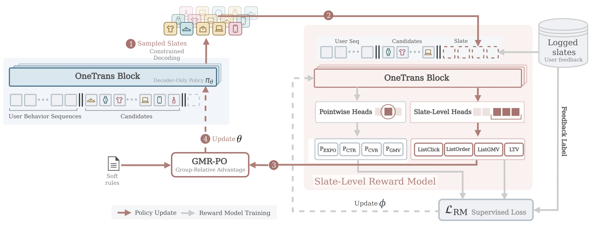
Figure 2 左侧策略用用户行为和候选生成受约束列表，右侧 RM 从日志列表及反馈训练；训练好的评价器冻结后，给左侧产生的样本提供列表奖励，GMR-PO 再更新策略。图中的多头包括逐点预测、列表预测和长期价值，表示不同监督粒度，而不是线上需要逐个运行的独立模块。软规则以另一条输入进入优势计算，使业务偏好和预测效用在训练时共同作用。箭头颜色区分策略更新与 RM 训练，避免把生成样本回灌后直接当作真实用户标签。正确顺序是先有日志监督的评价器，再对当前策略的样本评分，不是对策略生成列表实际执行在线试验。该结构把较重评价计算放到离线，但也形成代理误差可能被优化放大的通道；因此后续必须检查集成评分、真实在线结果和负向目标，而不能只看训练奖励是否单调上升。
长期模型单独预测购买后十四天内的复购概率，只在标签成熟后训练。作者沿用逐项价值分解，把即时点击、条件购买和条件复购概率相乘再求和：
符号解释：$c$ 是列表中的候选，三个概率分别对应点击、点击后购买和购买后复购。这个分解利用生产日志中绝大多数列表至多一次点击或购买的经验，原文比例为 98.3% 与 99.99%。它让稀疏延迟目标可以由逐点预测组合，却依赖这些概率及条件结构在策略变化后仍有效。它是长期价值的有限期代理，不能把和式当成所有多物品消费场景的精确期望。
2.2 候选预填充与自回归列表选择
每次请求的候选表就是输出词表，策略在其中无放回选择。不同于固定语言词表，物品集合随请求变化，因此候选的内容和上下文必须进入计算。预填充时，用户行为 token 保持各自原有掩码，候选可看到用户历史及全部候选；生成位置看到预填充内容和已生成前缀，反向却不允许预填充 token 看到未来生成项。这使候选在第一层开始交互，较输出层点积或层内交叉注意力更早传递组合信息。
符号解释：$\mathcal C$ 为请求候选池，$T$ 为列表长度，$c_{i_t}$ 是第 $t$ 个所选物品，$\theta$ 是策略参数。这个分解让后续选择条件化于前面已经出现的内容，从而表达重复、互补和内容类型分配。它本身不解决奖励定义、搜索最优性或业务规则，只规定列表概率怎样由逐步决策组成。
符号解释：$h_{t-1}$ 为当前解码状态，$e_i$ 为候选嵌入，$\operatorname{sg}$ 为停止梯度，$\tau$ 是受上界限制的可学习温度，$\delta_t$ 表示业务 logit 调整，$m_{t,i}$ 对已选项为负无穷、其他为零。停止梯度只作用于输出打分路径，候选仍经输入预填充路径学习。这样可以避免常被选择的同类物品在输出梯度上收到高度相关拉力，降低嵌入塌缩风险，并不冻结整张候选表示表。
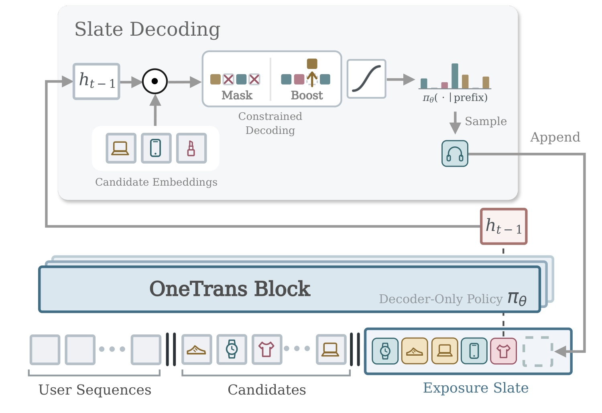
Figure 3 从底部用户序列和候选开始，先用一次预填充形成共享 KV 状态，再以分隔 token 的状态选择首项。每次选择由当前隐藏状态与候选嵌入计算打分，加上掩码和业务加权，得到分布后采样一项，追加回生成前缀；右侧回路表示下一步以新的前缀继续。候选嵌入始终来自当前请求，不是生成不可见的新商品。图中没有在线 RM，因为服务并行采样多个完整列表后，按累计序列 log 概率挑选一列直接曝光。训练中使用的奖励最优与服务中概率最大的列表并非同一筛选准则，离线评估因此也必须保留这一选择方式。共享的预填充缓存只算一次，各采样分支的自回归缓存独立增长，既避免复制长用户历史，又不意味着分支之间共享后续生成状态或执行 beam 重排。对于实现迁移，缓存边界、候选掩码和采样预算比“只部署一个模型”更具体。尤其多个采样列表的概率来自同一策略，按最高序列概率选择并不等价于逐位置贪心，也不等价于奖励模型在线再评分。
2.3 解码约束与软业务偏好
业务规则通过两种路径进入系统。严格禁止的行为用负无穷掩码排除，可调偏好则使用有限的 logit 惩罚或加权。标签频率规则在滑窗内计算追加当前候选后的计数，并估计剩余位置还能补入多少标签项；超过上限或无法达到下限时施加调整。多模态相似性用候选与已选前缀的平均相似度惩罚，广告则加常数 boost。所有函数在训练采样与服务中一致使用，避免模型只在训练时学习一种分布、上线后又被另一套规则大幅改写。
符号解释：$\mathcal S$ 是请求规则集合，$\chi_r$ 标记候选是否带相应标签，$n_{r,t}$ 是追加后的标签计数，$\Delta_{r,t}$ 是剩余可补充容量，$T_{\min},T_{\max}$ 是配额范围，$\eta_r$ 是有限惩罚强度。原文默认有限惩罚为 0.1，必须规则另用硬掩码。每条规则独立检查，不能保证全部相互作用的配额在最终同时可行；若所有候选均被屏蔽，softmax本身也失去有效分布，需要系统另行处置。
软偏好还形成归一化到零至一的规则奖励。作者比较直接相加后统一标准化，与先分别标准化预测奖励、规则奖励再加权两个方案。后者避免两类信号的尺度变化互相淹没，但仍由权重规定业务取舍。有限分数调整和奖励权重都不是“模型自动决定所有商业目标”，而是把人工可控边界嵌入学习与解码同一链路。
2.4 GMR-PO与集成保守评分
效率奖励使用三个不同初始化、轮转接收不同训练数据流的 RM，按目标计算均值和标准差，再减去分歧惩罚；长期模型不采用这一集成惩罚。
符号解释：$q$ 是请求，$g$ 是同请求的采样列表编号，$v$ 为点击、订单或成交额目标，$\mu,\sigma$ 是集成预测的均值与分歧。文中简称 LCB，但这只是保守启发式，没有统计覆盖保证；如果三个模型共同带有曝光偏差，减去分歧不能校正共同偏差。实验比较的是完整集成管线与单模型，不单独识别惩罚项的因果贡献。
符号解释：最小最大值都在同请求的采样组中计算，$\epsilon_{\rm mm}=10^{-8}$ 防止除零，$\delta_R=10^{-4}$ 提供正数下界，正权重 $w_v$ 之和为一。几何平均让某一低分维度对总奖励产生更大限制，相比加法更难用另一维高分补偿。但组内归一化后的值不是业务期望，也不能保证每项目标同时变好或达到帕累托最优；常数目标归一化后统一取下界，不再区分该组样本。
符号解释：$x$ 可以是几何聚合后的 RM 奖励或规则奖励，均值和总体方差在采样组内用 FP32 累积，$\epsilon_z=10^{-8}$，$\lambda_{\rm rule}=0.1$。先分别标准化再合并的是两个优势，和把原始奖励直接相加不同。采样组仅含新策略 rollout，不把日志曝光列表放进组统计；日志列表只用于监测对照。
符号解释：$G$ 为训练采样数，$T$ 为列表长度，$\rho$ 为当前策略与冻结采样策略在所选候选上的概率比，$s$ 包含用户、候选和列表前缀，$\pi_{\rm ref}$ 为冻结参考策略。优势在更新时视为常量。实现对新采样组只做一次优化更新后丢弃，作者说明该部署方式下裁剪宽度不影响实际单步更新；因此不能把通用 PPO 公式里的裁剪功能直接解释为本文反复复用旧样本的稳定来源。
3. 实验结果
3.1 生产日志与策略比较口径
实验使用同一工业推荐系统三个月的专有日志，每条请求保留用户行为、候选池、实际曝光列表以及逐项点击、订单和成交额反馈。离线采用按时间处理的 next-batch 协议：每个小批先评估再训练，以减少把未来信息引入当前评估的风险。模型不是在公开推荐数据集上获得主结果，生产日志也未随本轮访问验证为公开可用，因此本文更适合作为工业结构案例，而不是下载统一数据后直接横向比较的榜单工作。
效率 RM 为三成员集成，每成员两层、隐藏维度五百一十二、四个注意力头；策略四层、隐藏维度二百五十六、四头。后训练全局批量为一千零二十四个请求，默认训练与服务均采样三十二个列表。离线每个策略都按服务规则从同预算采样中选择累计序列概率最高的列表，然后比较其 RM 分数与日志列表分数的相对差。这个 RG 是比值，主表没有乘百分之一百；它衡量预测代理相对变化，不是观察到的点击、订单或成交额提升。表中的波动为三个评估日的标准差，也不是跨训练随机种子的置信区间。
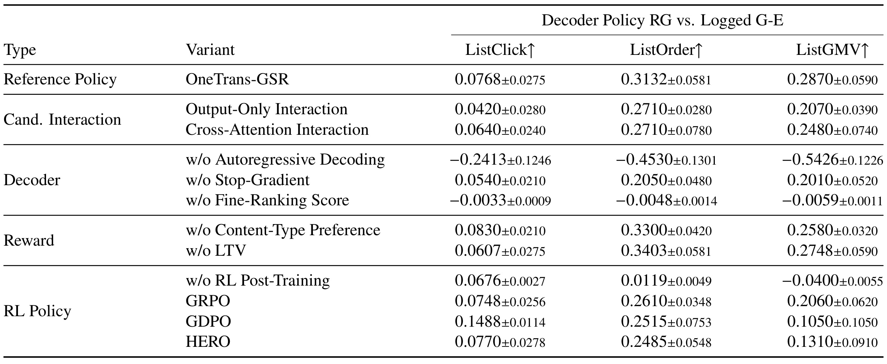
Table 1 的参考策略对日志 G-E 列表取得正的 ListClick、ListOrder、ListGMV 预测增益，分别为零点零七六八、零点三一三二和零点二八七零。非自回归对照三项均为负，说明在该输入和优化设置下，一次并行预测所有位置没有保留逐步条件化的效果，但不能推出所有非自回归推荐方法必然失败。输出层交互与交叉注意力的结果低于候选预填充，支持较早候选交互；去掉输出停止梯度或精排分数同样降低结果，尤其精排先验缺失使三项目标接近零或负向。奖励消融不是全面同向：去掉类型偏好提高点击和订单代理，却降低成交额；去掉长期奖励也改变多目标取舍。与其他优化算法比较，GMR-PO 的订单和成交额均值较高，GDPO 的点击代理反而更高。这里应读出系统组合及目标平衡，而不是把主表粗略压缩为“全部组件、全部指标都最好”；三个日标准差也不足以宣布细小差异显著。表内日志基线是实际曝光列表而非另行生成的理想列表，因而比较还受原生产策略选择范围约束。
3.2 奖励模型是否真正看到列表结构
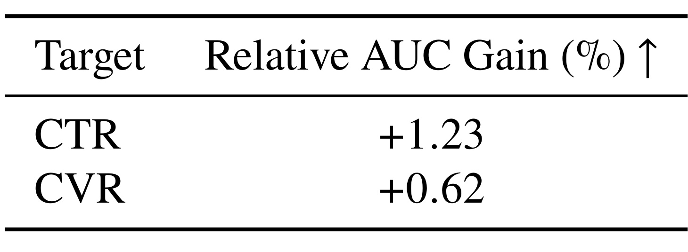
Table 2 比较 RM 与上游精排器共享的点击和条件转化任务，报告相对 AUC 提升分别为百分之一点二三和百分之零点六二。表中没有给出上游 AUC 的绝对值，因而不能把这些数写成直接增加一点二三个百分点，也不能凭此计算最终 AUC。模型在已曝光位置上进行判别，结果经过位置平均，能说明列表评价主干没有完全牺牲逐点区分能力，但没有证明各位置、不同内容类型或长尾用户都同样改善。尤其 RM 可以接收精排分数作为特征，这项比较不意味着它在完全移除精排信号后仍优于精排模型。作者将两种角色区分开：上游负责提供候选和先验，RM在完整列表条件下继续评价。对于复现，应同时保留绝对基线、位置分层和特征来源；仅搬用相对提升数字，无法判断收益来自新增列表上下文还是已有强先验在后级被重新利用。此外，这里没有以在线随机化直接检验奖励模型独立替换精排的效果，不能从预测表推出应将前级模型取消。
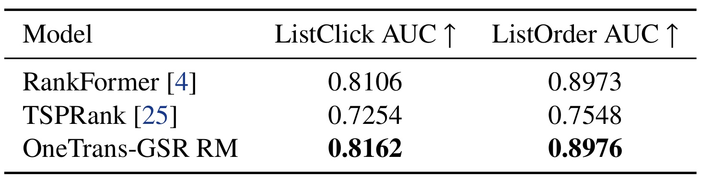
Table 3 将三种列表建模器放在相同日志、特征和按时间评估协议下，OneTrans-GSR RM 的列表点击 AUC 为零点八一六二，订单 AUC 为零点八九七六；RankFormer 分别为零点八一零六和零点八九七三，后一个差距只有零点零零零三。TSPRank 在这组设置下较低，不能因此跨到别的数据域判断其普遍优劣。两列 AUC 只区分列表有没有正反馈，没有度量多个点击的数量误差、非零订单的多少或成交额数值偏差。因此“列表 AUC 较高”与“生成列表能带来更多订单”之间仍隔着代理有效性、曝光分布变化和政策优化等环节。表里没有逐项标准误或置信区间，订单上的极小优势应写成点估计略高，不能宣称可靠显著提升。这也说明比较奖励模型需要多种诊断：预测区分、校准、结构敏感性和最终在线结果互相补充，单列排序无法替代其余证据。尤其订单正例更稀疏时，微小判别差距是否稳定，应结合样本规模和逐日波动判断，原表没有提供足够统计材料回答。
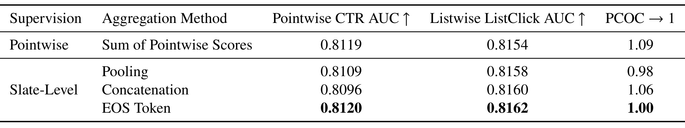
Table 4 把监督粒度和聚合方式拆开。逐点预测相加的 CTR AUC 为零点八一一九，列表点击 AUC 为零点八一五四，预测与观察点击总量比为一点零九。列表监督配合池化或拼接略提高列表判别，但逐点区分度下降；使用 EOS 读出后，CTR AUC 为零点八一二零、列表点击 AUC 为零点八一六二，PCOC 为一点零零。这支持在论文配置中通过末尾状态同时利用顺序和完整上下文，而不是任意加一个列表标签就得到同样效果。需要注意 PCOC 是汇总比例，接近一不等于单个用户、各内容类型或所有分数桶都校准，更不等于后训练中指数变换的奖励已经成为真实点击期望。该表的作用是为读出选择提供局部依据，不能把全局总量一致性当作奖励模型在策略探索分布下不会出错的保证；后面的扰动和线上对照正是进一步检验这项假设。若真实部署用户构成变化，全局预测总量仍可能碰巧抵消不同群体误差，因此还需要分群校准和策略外分布检测。
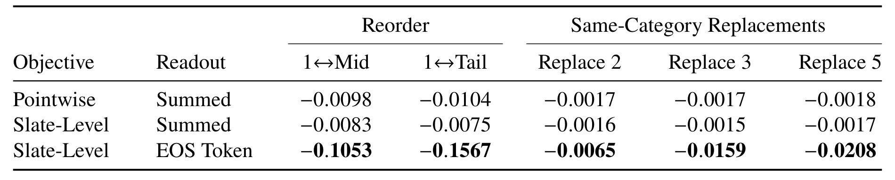
Table 5 在同一分数尺度上交换首位与中部或尾部物品，并用同品类候选替换若干非相邻位置。逐点加和与列表监督后仍加和的响应都很小，而 EOS 对首尾交换的分数变化达到负零点一五六七，对替换数量增加也更敏感。交换位置保留物品集合，因此尤其有助于观察顺序影响；同品类替换则同时改变物品身份，不能把其变化纯粹归因于多样性。更关键的是，扰动后的列表没有真实用户反馈标签，分数下降只说明模型感知到了结构变化，没有证明真实效用真的按同样幅度下降。若一个奖励模型对无关改动也非常敏感，可能产生过度反应，所以敏感性本身不是准确率。本文把它和日志 AUC、汇总校准共同使用较为合理：既不希望模型对明显顺序变化完全迟钝，也不应把任何较大响应自动看作理解了用户偏好。位置交换与物品替换最好分别保留，前者更接近顺序控制，后者则混合相关性和组成变化，不能用一列分数差覆盖。
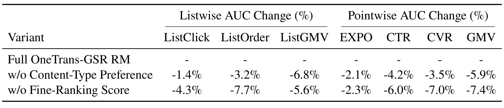
Table 6 报告移除组件后相对完整 RM 的 AUC 变化，负号表示退化。去掉类型偏好监督使列表点击、订单、成交额和逐点任务均下降，其中列表成交额下降百分之六点八；去掉上游精排分数的影响也很大，逐点成交额下降百分之七点四。这说明两个信息来源在当前系统中有用，但它们的功能不同：类型任务为共享表示提供辅助训练，精排分数则传入强已有先验。表中的下降是 AUC 相对变化，不能当作下单率或收入损失，也不能和主策略表的 RG 直接拼接。还要对照 Table 1：移除类型偏好会降低 RM 判别能力，却可能提高策略某些预测目标的均值。这种表面冲突说明评价器质量与多目标策略取舍不是一条单调链，不能用“组件消融下降”一句话覆盖不同层级实验。真正有说服力的迁移应同时查看预测性能和在线优化后的结果，而不是只在奖励模型训练集上保住一列指标。
3.3 列表组成、规则控制与代价
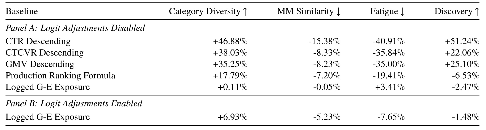
Table 7 的四列分别衡量品类数、多模态相似性、重复无点击品类曝光和新物品比例。上升或下降是否有利取决于指标定义，不能看到负号就判断受损。关闭加性 logit 调整后，学习策略相对逐点排序表现出更多品类和较低重复，但相对已部署 G-E，品类多样性只高百分之零点一一，疲劳反而高百分之三点四一，发现率低百分之二点四七。打开调整后，多样性高百分之六点九三、相似性低百分之五点二三、疲劳低百分之七点六五，发现率仍低百分之一点四八。可见规则调节并未被完全学掉，且完整方案也没有在所有组成指标上胜过生产基线。四种代理描述输出形态，并不直接反映用户是否更满意；品类数量增加也可能挤掉相关物品。该表最有价值的是显示学习和显式控制各补什么缺口，让工业规则的保留有实证语境，而不是宣称单模型上线就不再需要人工目标边界。
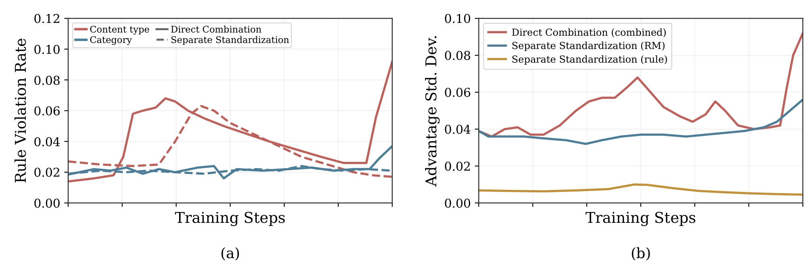
Figure 4 左图跟踪内容类型与品类打散的违例率，右图跟踪优势信号的标准差。直接把规则奖励和模型奖励相加后再标准化，在训练后段发生明显波动，最后违例率跳升；分别标准化的曲线相对平稳。右侧直接合并信号的尺度变化，与左侧不稳定现象共同支持将两类奖励分别处理，但曲线相关性不等于已经隔离全部致因。分别标准化也不是让业务目标自动消失，它仍使用固定权重合并两个优势，且每组样本的方差和候选难度会影响梯度。图示结果适用于该奖励范围和采样设置，不能保证任何规则系统都稳定。实际部署需要同时监测奖励方差、违例率和效用变化；如果违例下降来自策略只选择保守或同质候选，还需回看多样性、发现率及业务收益。这使标准化更像一个可检查的信号尺度控制，而非可替代业务规则审查的通用稳定性证明。
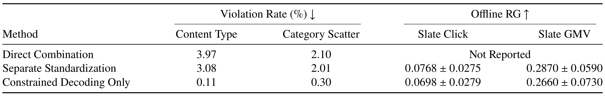
Table 8 给出三种控制策略。直接合并的内容类型和品类打散违例率为百分之三点九七与二点一零，因为后段不稳定，离线 RG 没有报告；分别标准化降至三点零八与二点零一，并保留正的预测效用。只通过约束解码处理业务需求的变体，违例率进一步降至零点一一和零点三零，同时点击与成交额 RG 仍为正，但低于完整参考策略的相应均值。不能据此说硬掩码竟然“失败三个百分点”，因为表中的综合统计含软偏好目标和候选池不可行请求，并不是仅在联合可行池上计算的强制规则违例率。局部标签检查也不保证终局同时满足所有配额。表体现的是可控性与代理效用之间的折中，而非有一个方法对所有指标全面支配。要在自己的系统验证，应另报可行池覆盖率、强制规则违例、软目标满足度和回退率，避免让综合比率掩盖真正需要强保证的部分。
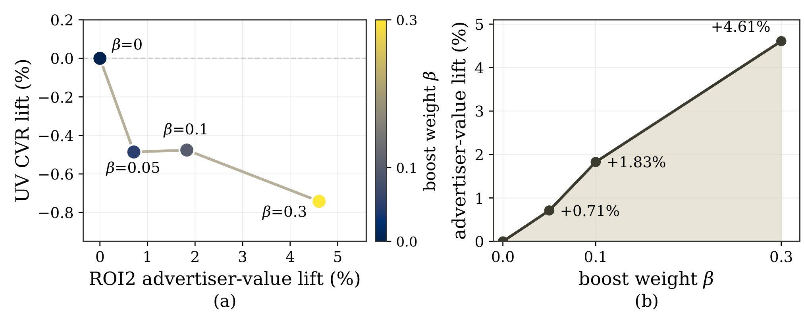
Figure 5 改变广告候选的 logit boost，右图广告价值随权重单调增加，测试的非零权重分别带来约百分之零点七一、一点八三和四点六一的广告价值提升。左图同时显示每个非零加权都伴随用户转化率下降，最高加权处损失最大。这不是“优化失败”的偶然噪声，而是论文主动展示的一条可控目标折中：向广告分配更多概率会改变最终曝光组成。图中横纵轴采用相对变化，不能把广告价值提升与用户转化率下降按数值直接相减，更不能在没有业务权重和统计区间时自行断言净收益。默认策略的生产结果也不能由扫描曲线任意一点替代。该图提醒我们，显式控制仍是重要的产品与商业决策接口；模型能够响应加权，证明控制具有作用，但不决定应该选择哪个权重。迁移时应保留用户体验和商业指标的联合护栏，并核对长期行为是否随短期曝光变化而受损。
3.4 奖励可靠性与计算扩展
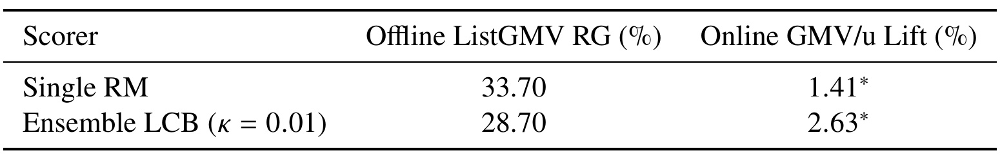
Table 9 是本文最应保留的代理反例。同一个随机生产试验中，两个处理臂共享 G-E 对照，只改变后训练的奖励评分管线。单 RM 获得更高的离线预测成交额增益百分之三十三点七，在线人均成交额却只提升百分之一点四一；集成保守管线的离线代理增益较低，为百分之二十八点七，线上反而提升百分之二点六三。两个线上结果都标注相对对照达到作者给出的显著性门槛，但没有给出两处理臂差异的置信区间，因此不能直接认定二者之间差距已经显著。该对比支持“更高预测奖励不保证更高在线收益”，却不能单独证明全部差异来自分歧惩罚：集成同时改变成员初始化、数据流和均值聚合。文中 LCB 不是校准置信界，更没有对公共偏差的免疫力。它适合作为部署诊断和后续消融起点，不能把两个数字之间的离线线上差距机械定义成奖励过优化的精确程度。
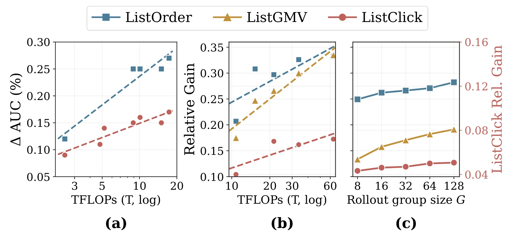
Figure 6 沿三个维度扩大计算：奖励模型容量、策略容量和同请求采样数。左图展示 RM 的相对判别改进随计算增加，中图展示不同策略容量下的预测效用，右图展示采样组大小变化。需要看清中右图对列表点击使用另一根纵轴，点击曲线并没有像订单和成交额那样快速增加；不能因曲线图形接近就认定提升幅度相同。虚线是对已测试配置的对数线性拟合，并非经过广泛验证的通用 scaling law。不同采样数的完整配置可能同时影响训练与服务预算，也不能把全部差异单独归因于多采几条训练轨迹。更重 RM 留在离线，确实可以与服务模型容量分开扩展，但它仍带来训练成本和代理偏差。该图支持在有限区间内投入计算有收益，并不保证任意扩大计算都能转化为真实线上收益；Table 9 已经说明即使离线代理更高，线上也可能排序相反。该图也没有给出无限加大采样数时的用户体验回报，实际选用中等预算体现的是有限成本下折中。
3.5 系统实现与生产随机试验
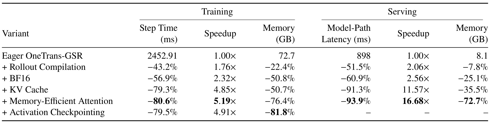
Table 10 的所有百分比和倍数都相对 eager 基线计算，行与行之间是累积方案，不能再把每行倍数相乘。训练基线每步约二千四百五十三毫秒、显存七十二点七吉字节；逐步加入编译、半精度、缓存和高效注意力后，训练最快累计五点一九倍，再加激活检查点为节省显存付出额外计算，最终训练速度为四点九一倍、显存下降百分之八十一点八。服务一侧的十六点六八倍对应模型路径，从八百九十八毫秒的基线出发，包含减少重复自回归计算、共享预填充等实现收益；它不是与旧生产 G-E 系统相比的完整服务加速。激活检查点只用于训练，服务列为空。模型路径显存下降百分之七十二点七，也不包含整个推荐服务所有组件占用。这张表的实际价值在于说明模型结构之外的实现优化足以改变成本评价：若对照实现是否启用缓存、编译和精度不同，最终延迟差异不能全部归因于学习算法。
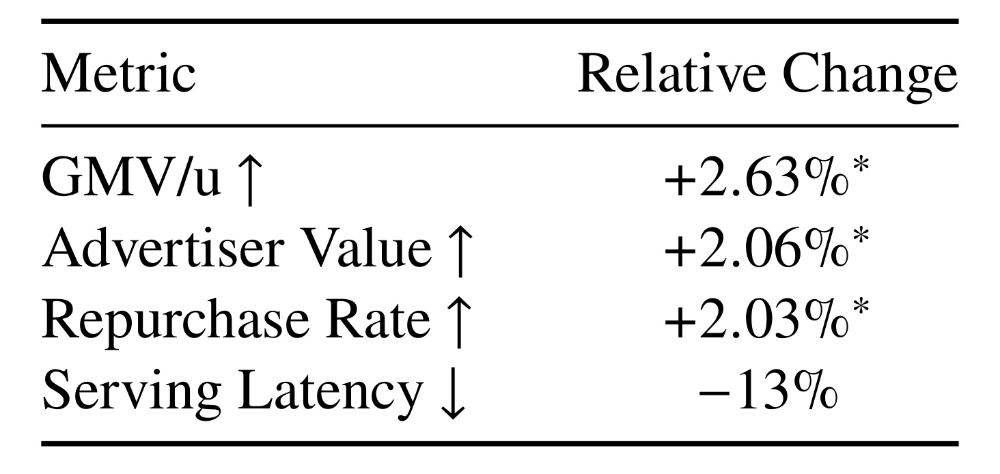
Table 11 给出整体替换的生产证据。用户按账户随机分配，两组获得相等比例的合格流量，分流实验持续一周；复购率在完整十四天观察窗口后才计算。对照为原生产 G-E 系统，处理组由 OneTrans-GSR 替换重排混排级联，上游召回、精排和业务规则集合保持一致。人均成交额、广告价值、复购率相对变化分别为正百分之二点六三、二点零六和二点零三，作者均标注小于零点零五的显著性门槛；两阶段端到端服务延迟下降百分之十三，计时排除上游召回精排。论文没有在表内给出样本量、精确概率值、置信区间或多重比较处理，延迟项也没有显著性标记。这些结果支持该工业场景中完整系统的业务价值，不能分解为某个模块的独立贡献，更不能将复购增加全部归因于长期奖励。生产级联减时和模型路径十六倍是不同对照，应各自保留。没有延迟的均值分位数拆分，也不能据此断言尾延迟同样下降百分之十三。
4. 总结
OneTrans-GSR 最有工程价值的选择，是把列表评价和列表执行分开扩展：评价器在离线学习完整列表反馈，策略在线生成候选子集及其顺序，同时保留请求级规则控制。它并未绕开已有精排能力，反而显式利用精排分数；也没有证明规则不再重要，列表组成与违例实验恰好显示显式调整仍补足模型未学会的部分。单模型服务减少了阶段间的组装和评价开销，但需要更仔细地对齐训练分布、服务选择规则和业务约束。
对推荐系统，可以借鉴的研究步骤是先把最终列表的联合目标定义清楚，再检查所用评价器是否感知顺序和组成，而不是直接把逐点分数求和称为列表奖励。候选预填充与输出梯度隔离分别针对候选交互和表示塌缩，是可拆开的实现选择；不应在尚未复现它们时，把整套线上收益归因于自回归架构。对于有多种内容形态或广告配额的系统，还应把联合可行性、软偏好、强制规则和回退处理作为不同指标，避免单个违例率代替所有安全边界。
对大模型后训练，这项工作提供了一个具体的多目标奖励案例。几何聚合抑制一维低分被其他高分轻易补偿，分别标准化避免不同奖励尺度互相淹没，集成分歧惩罚降低部分代理误差风险。但这些工具都需要保留不确定性：几何平均不是帕累托保证，标准化会依赖采样组，分歧低不代表共同偏差小。策略优化的目标仍然是代理，使用更强奖励模型与更多计算，必须通过真正不依赖同一评价器的证据检验。
本轮阅读保留六项限制。首先，生产与日志来自单一专有系统，外部迁移及可复现性尚未建立。其次，离线 RG、AUC、PCOC 和扰动敏感性描述不同对象，任何一项都不能直接替代用户收益。第三，主要消融报告三个评估日波动，缺少跨种子训练不确定性，细微均值排序不能自行宣称显著。第四，生产试验缺少样本量、精确统计区间及长期护栏细节，已有显著性标记也不能支持所有分组结论。第五，业务规则独立检查可能产生无可行解前缀，需要明确回退机制。第六，模型路径基准与完整服务路径不同，成本迁移必须重新测量目标硬件、候选规模和采样预算。另一个值得谨慎的细节是服务按概率选列表、训练按奖励优化样本均值；二者之间尚缺普遍一致性证明，可能在更激进探索或不同长度下产生新偏差。
后续优先做三组复核。第一，在固定候选、共享精排特征和同服务采样预算下，分别复现候选预填充、停止梯度与列表读出，报告正负目标及方差，识别结构收益是否稳定。第二，将单 RM、仅集成均值、加入分歧惩罚分开，同时使用外部标签和独立在线对照，检查代理收益反转发生在哪些用户或内容类型。第三，按联合可行池、不可行池和各规则类别拆开报告满足度与回退率，并跟踪十四天之外的疲劳、发现和留存护栏。若不能同时获得这些证据，最稳妥的结论仍是：论文展示了该生产场景下统一学习列表决策的可行性与整体收益，而不是给出适用于所有推荐系统的自动最优列表生成器。